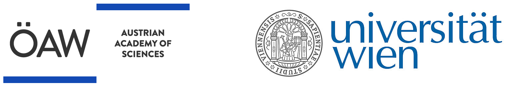

Vienna ELT Science + Simulations Workshop
#2
“Spatial resolution”
Vienna University, Sept. 22-24, 2025
A hybrid meeting for bringing together the ELT instrumentation and scientific communities in anticipation of the ELT's first light
Proudly supported by :
Why another ELT science meeting?
- What do we want to see with the ELT?
- What can the ELT see?
- How can we get time to see with the ELT?
- And if we cannot see with the ELT? What then?
The ELT is nominally four years away, or 1.33 PhDs away. Time is ticking for us to start thinking about how to get our hands on ELT data and how to write proposals that the ELT TAC will accept. Each instrument consortium is already working on these topics internally, but are we, as a community, working on this, too?
The Austrian Academy of Science is financing a series of 5 yearly meetings leading up to first light. The main aim is to bring together the future ELT community and to help build the science cases and proposals that will shape the ELT’s initial observing periods.
Meeting format
This three-day hybrid meeting aims to transform the numerous discussions on early ELT science topics into simulated observations that can be used to justify observing time in the earliest stages of ELT.
The meeting will complement traditional scientific presentations in the mornings with an observation simulation hackathon in the afternoons.
Keynote speakers
- ESO: Joel Vernet (ELT Prog Sci)
- ANDES: Alessandro Marconi (PI) + Livia Origlia (Inst Sci)
- MOSAIC: Roser Pello (PI) + Mathieu Puech (co-PI + Proj Sci)
- METIS: Wolfgang Brandner (Cal Sci)
- MICADO: TBD
- HARMONI: TBD
Goals of this Meeting
Raise awareness of the main ELT science cases for the first generation of instruments through a series of scientific presentations (24x 15+5 min presentations).
Foster collaboration on science feasibility studies between consortia.
Kick-start observation simulations to enhance feasibility studies and future proposals using the common observation simulator software (ScopeSim).
Create a collection of “toy models” for expected ELT targets in an open-source repository for use by others in the astronomical community.
Registration
The deadline for regular registration is the 15st of August, 2025.
The meeting will be limited to a maximum of 40 participants.
Location
The Observatory of the University of Vienna, Lecture Hall
Schedule
Individual presentations will follow a 15+5 min format.
Presenters are encouraged to additionally address the following topics during their talk:
- Which ELT instruments and modes are most valuable for the science case(s)?
- Synergies, if any, with other observatories (JWST, VLT, etc).
| Time | Monday, 22nd | Tuesday, 23rd | Wednesday, 24th |
|---|---|---|---|
| 09:00 | METIS 2-1 | MOSAIC 3-1 | |
| 09:20 | METIS 2-2 | MOSAIC 3-2 | |
| 09:40 | METIS 2-3 | MOSAIC 3-3 | |
| 10:00 | METIS 2-4 | MOSAIC 3-4 | |
| 10:20 | Coffee | Coffee | Coffee |
| 11:00 | ELT 1-1 | HARMONI 2-5 | MICADO 3-5 |
| 11:20 | ELT 1-2 | HARMONI 2-6 | MICADO 3-6 |
| 11:40 | ELT 1-3 | HARMONI 2-7 | MICADO 3-7 |
| 12:00 | ELT 1-4 | HARMONI 2-8 | MICADO 3-8 |
| 12:20 | Lunch | Lunch | Lunch |
| 14:00 | ANDES 1-5 | ScopeSim Hackathon | ScopeSim Hackathon |
| 14:20 | ANDES 1-6 | Part 1 | Part 3 |
| 14:40 | ANDES 1-7 | ||
| 15:00 | ANDES 1-8 | ||
| 15:20 | Coffee | Coffee | Coffee |
| 16:00 | ScopeSim Intro | ScopeSim Hackathon | ScopeSim Hackathon |
| 16:20 | (Beginner/Advanced) | Part 2 | Part 4 (Optional) |
| 16:40 | |||
| 17:00 | |||
| 17:20 | |||
| 19:00 | Conference Dinner | Observatory Tour |
Goals of future meetings
The five annual meetings aim to highlight the science cases which can best make use of a specific benefit of ELT observations. The following meetings will be organised with an emphasis on the following themes:
2024
First Light
Which science cases will make the biggest splash early on, in both a scientific and a “public outreach” sense. The so-called low-hanging fruit.
2025
Spatial resolution
How will our science cases be able to profit most from the spatial resolution of a 40 m mirror.
2026
Collecting Area
What do we expect to see at the edge of the sensitivity limits of the ELT? How will the ELT be able to improve upon the success of JWST in this regime?
2027
High Contrast
Many of the first generation instruments include various coronagraphic modes. What do we expect to be able to discover at single digit lambda/D distances with the ELT.
2028
Astrometry
Sub-milliarcseond astrometry will be part of everyday operations at the ELT. How can we use this capability to enhance our knowledge of the “moving” universe?
CONTACT
If you have any questions regarding the meeting, please reach out: